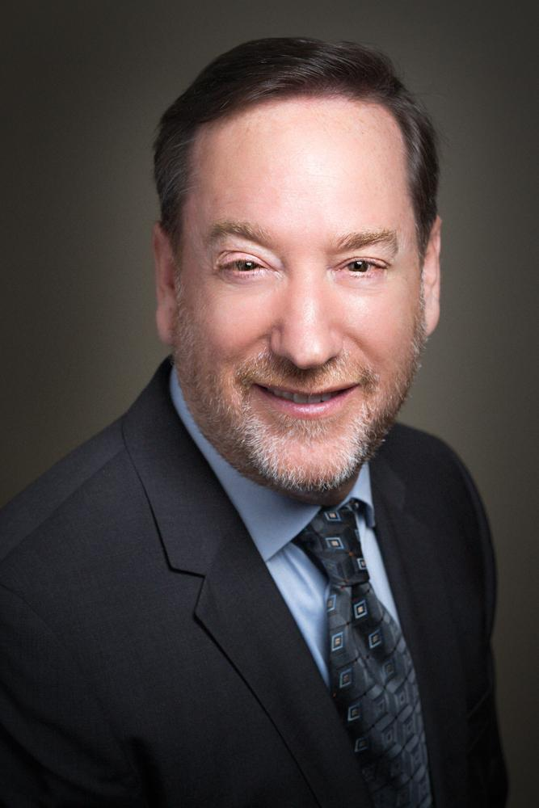

Lance A. Sloan
Texas Institute for Kidney and Endocrine Disorders — EUA
Sobre o Palestrante
About the Speaker
Médico norte-americano com mais de três décadas de experiência nas áreas de nefrologia, endocrinologia e medicina interna, reconhecido por sua atuação integrada e por uma abordagem centrada no cuidado multidisciplinar do paciente. É Diretor Médico do Texas Institute for Kidney and Endocrine Disorders e da SNG Lufkin Dialysis, no Texas (EUA), além de Professor Assistente Clínico na Divisão Médica da Universidade do Texas em Galveston. Com formação em Engenharia Biomédica (bacharelado) e Engenharia Elétrica (mestrado) pela University of Texas at Austin, obteve seu título médico pela University of Texas Medical School at Houston em 1985. Possui certificações pelo American Board of Internal Medicine nas especialidades de medicina interna, nefrologia e endocrinologia, além de especialização em densitometria clínica pelo International Society for Clinical Densitometry. Entre suas áreas de expertise estão: doença renal crônica, diabetes, síndrome metabólica, distúrbios lipídicos, osteoporose, nutrição clínica e hipertensão arterial. Essa combinação rara de competências permite ao Dr. Sloan diagnosticar e tratar o corpo de forma integrada, oferecendo também orientações nutricionais personalizadas a cada paciente. Participa ativamente de comitês consultivos e forças-tarefa de importantes entidades norte-americanas como a American Society of Nephrology, Endocrine Society, Renal Physicians Association e o Texas Diabetes Council, onde atua há mais de 20 anos auxiliando na formulação de diretrizes estaduais e políticas públicas sobre o tratamento do diabetes. Também presta consultoria a grupos farmacêuticos e comitês hospitalares em temas relacionados a doenças renais e distúrbios metabólicos. Sua produção científica é voltada à pesquisa clínica aplicada, com foco em nefropatias diabéticas, metabolismo ósseo, anemia renal, aterosclerose e resistência à insulina, participando regularmente como palestrante em eventos nacionais e internacionais.
Dr. Lance A. Sloan is an American physician with over three decades of experience in nephrology, endocrinology, and internal medicine. He is widely recognized for his integrated approach and commitment to multidisciplinary patient care. He currently serves as the Medical Director of the Texas Institute for Kidney and Endocrine Disorders and SNG Lufkin Dialysis (Texas, USA), and as Clinical Assistant Professor at the University of Texas Medical Branch in Galveston. He holds a Bachelor's degree in Biomedical Engineering and a Master's in Electrical Engineering from the University of Texas at Austin, and earned his MD from the University of Texas Medical School at Houston in 1985. He is board-certified in Internal Medicine, Nephrology, and Endocrinology by the American Board of Internal Medicine, and holds additional certification in Clinical Densitometry from the International Society for Clinical Densitometry. His areas of expertise include chronic kidney disease, diabetes, metabolic syndrome, lipid disorders, osteoporosis, clinical nutrition, and hypertension. This rare combination of specialties allows Dr. Sloan to provide holistic care, including personalized nutritional guidance tailored to each patient’s needs. He is actively involved in advisory committees and task forces of major U.S. organizations such as the American Society of Nephrology, the Endocrine Society, the Renal Physicians Association, and the Texas Diabetes Council. For over 20 years, he has contributed to shaping public health policies and clinical guidelines for diabetes care. He also serves as a consultant for pharmaceutical companies and hospital committees focused on renal and metabolic disorders. Dr. Sloan’s scientific work centers on applied clinical research, particularly in diabetic nephropathy, bone metabolism, renal anemia, atherosclerosis, and insulin resistance. He is a frequent speaker at national and international conferences.